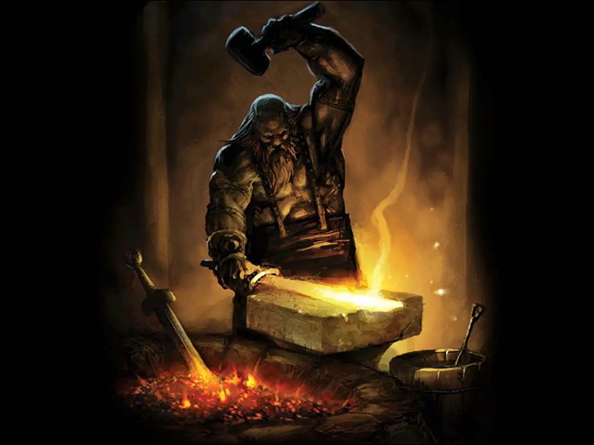
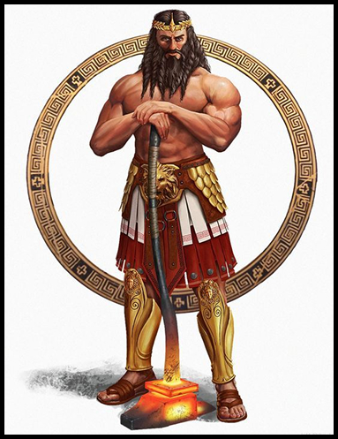
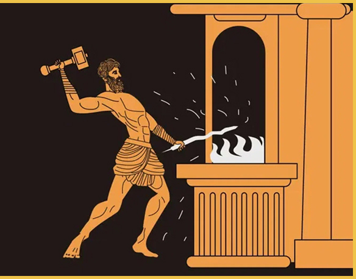
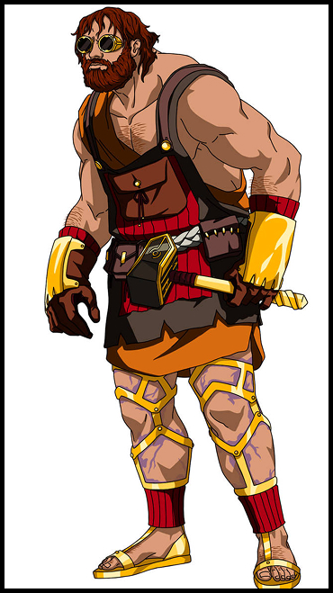
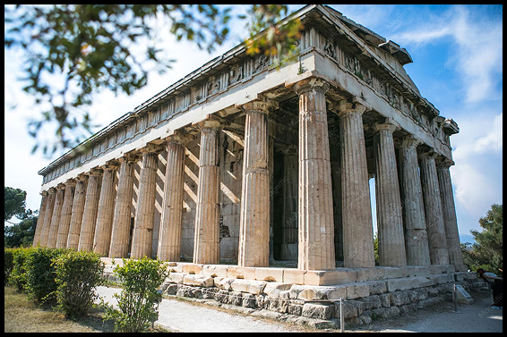
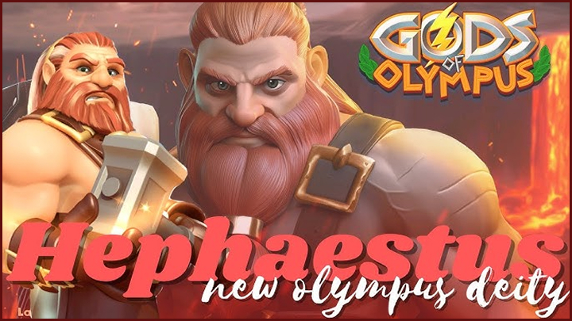
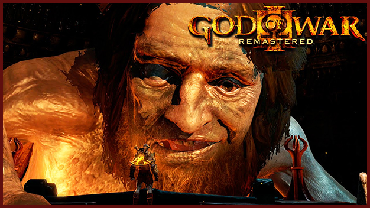

A mitologia grega é um conjunto de histórias criadas pelos gregos para explicar o mundo, a natureza e o comportamento humano. Esses mitos envolvem deuses poderosos, heróis e criaturas fantásticas.
Dentro desse universo, Hefesto representa a forja, a metalurgia e os trabalhos artesanais.

Hefesto era o deus grego do fogo, da metalurgia e das forjas. Filho de Zeus e Hera, nasceu no Olimpo, mas foi rejeitado por causa de sua aparência e lançado do céu.

Hefesto possuía domínio absoluto sobre o fogo e os metais. Seu maior poder era a habilidade de criar itens lendários usando sua forja divina.

Uma das histórias mais conhecidas de Hefesto envolve sua expulsão do Olimpo. Após cair dos céus, ele foi acolhido por ninfas e aprendeu a arte da metalurgia.

Os principais cultos dedicados a Hefesto aconteciam em regiões vulcânicas da Grécia. Artesãos e ferreiros faziam oferendas ao deus.

